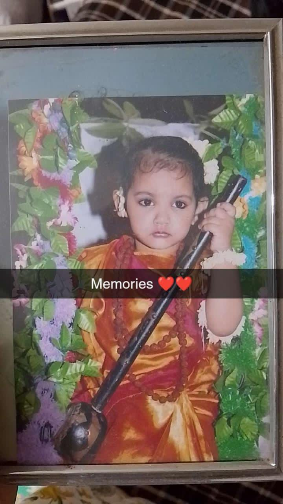

Dear Bhumi,
This little trail of questions, cakes and candles were all just a small way to put a big smile on your face because tu haste hue bhut achi lgti hai.
Wish you a veryyyyyyyyyyyyyyyyyyy happpppyyyyyyy wala birthday bhumi. Yeh jo uper choti bhumi ki photo hai yeh bss tere andr ka chota child jagane ke liye hai and tere andr ki choti bhumi jo so chuki hai uski excitement jagane ke liye. May this year will be the best year for you , teri saari wishes poori ho and tu hamesha khush rahe and aise hi hasmukh rhe hamesha haste raha krre kabhi bhi pareshani ya dukh na aae tere jeevan mein yeh mai dil se dua krta hu.
Abhi toh start hai aage dekh kya kya hai 😂😂😂
- Ghonchu